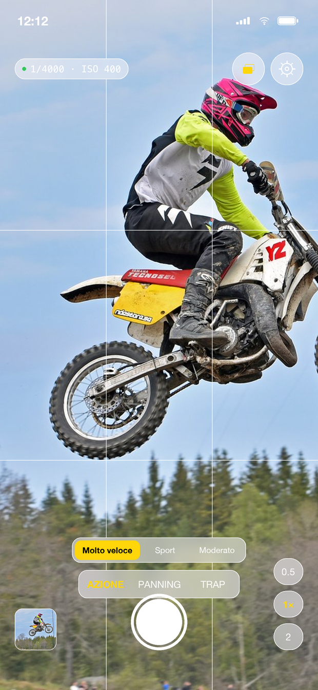
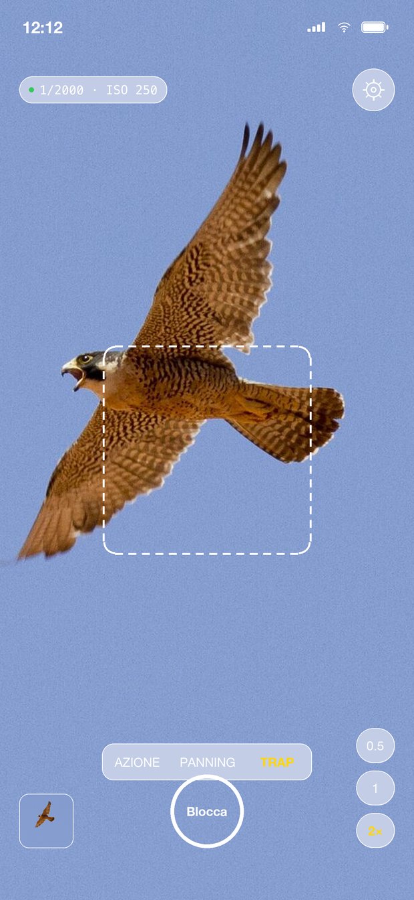
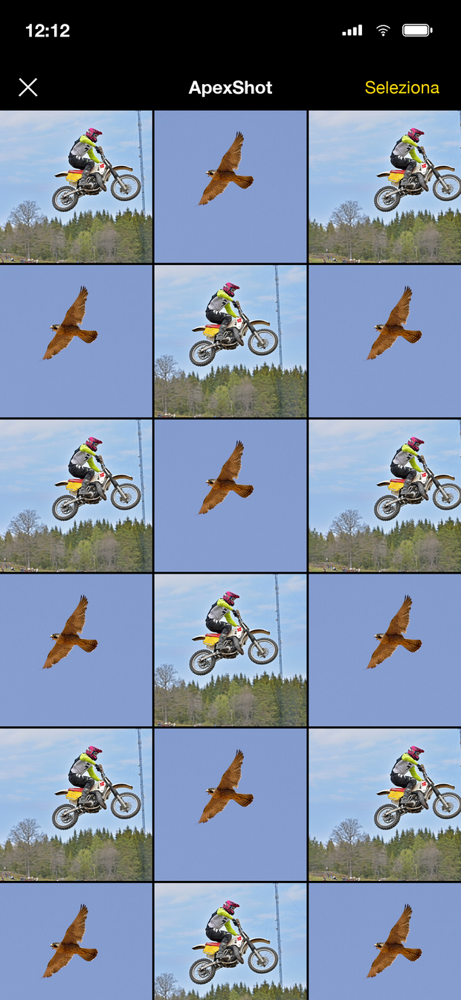

ApexShot
Foto nitide dell'azione.
La fotocamera che tiene il tempo rapido — così il soggetto è congelato, non spalmato.
Foto nitide dell'azione.
La fotocamera che tiene il tempo rapido — così il soggetto è congelato, non spalmato.
La modalità Azione blocca un tempo rapido per la velocità del soggetto che scegli e regola gli ISO per te — niente menu, niente istanti persi.
Una livella a schermo e una guida al ritmo ti aiutano ad accompagnare il soggetto: pilota nitido su uno sfondo splendidamente strisciato.
Blocca il fuoco su un punto e lascia che sia il soggetto a innescare la raffica al passaggio. Perfetta per un uccello in volo o un'auto all'apex.
ApexShot registra già il mezzo secondo prima che premi, con zero shutter lag sugli iPhone supportati. Non perdi mai il passaggio.
Il fotogramma più nitido viene selezionato in automatico e salvato in un album ApexShot dedicato, pronto nella galleria interna.
Tutto avviene sul tuo dispositivo. Nessun account, nessun tracciamento, nessuna analisi, nessuna pubblicità, nessun codice di terze parti — mai.



ApexShot non raccoglie alcun dato: niente analisi, niente pubblicità, niente account. Le tue foto vengono salvate direttamente nella tua libreria e non lasciano mai il dispositivo. Leggi la privacy policy →
Un tempo rapido ha bisogno di luce. In scene molto scure ApexShot mantiene l'azione nitida e lascia l'immagine un po' più scura, perché il mosso non si recupera — la luminosità sì.